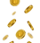

<div>
	<mat-sidenav-container class="viewport">
		<mat-sidenav class="side-nav" [opened]="true" [mode]="'side'">
			<div class="profile-container">
				<div class="logo-container">
					<a routerLink="/app">
						
					</a>
				</div>
				<app-profile-view style="width: 100%;"></app-profile-view>
			</div>
			<div *ngFor="let item of items">
				<app-sidenav-item [icon]="item.icon" [itemText]="item.itemText"></app-sidenav-item>
			</div>
			<app-sidenav-log-button></app-sidenav-log-button>
		</mat-sidenav>

		<mat-toolbar class="header-mobile">
			<mat-menu #menu="matMenu" class="header-menu">
				<button *ngFor="let item of items" style="width: 100%;background-color: #052534;">
					<app-sidenav-item [icon]="item.icon" [itemText]="item.itemText"></app-sidenav-item>
				</button>
			</mat-menu>
			<button mat-icon-button [matMenuTriggerFor]="menu">
				<mat-icon [ngStyle]="{'color':'white'}">menu</mat-icon>
			</button>
			
			
			<app-profile-view style="width: 100%;" *ngIf="loggedIn"></app-profile-view>
			<app-sidenav-log-button [ngStyle]="{'width':'100%','justify-content':'flex-end','display':'flex'}"
				*ngIf="!loggedIn"></app-sidenav-log-button>
		</mat-toolbar>

		<div class="main-content">
			<router-outlet></router-outlet>
		</div>
	</mat-sidenav-container>
</div>